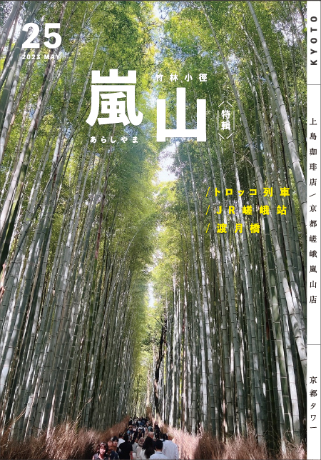

✕ 關閉選單 Close Menu
𖤐 首頁 HOME
𖤐 日本-九州
𖤐 日本-本州
☰
6

嵐山竹林小徑/ちくりんのみち
被青綠的竹林覆蓋著頭頂般的繁茂小徑，代表京都的地標型景點。
峨野因為景色風光明媚，從平安時代 (794～1185年) 就受到貴族和文人的愛戴。因此在嵯峨野建有許多別墅和小屋。嵯峨野竹林小徑從野宮神社經過天龍寺北門，再往大河內山莊延伸，是長約400公尺的散步小徑，被稱為
嵐山竹林之道
綠油油的竹子筆直參天的美麗姿態，常出現在旅遊雜誌的封面、電視連續劇和廣告上，以形容京都之美的代名詞而著名。
漏葉光影的風景、因風吹而搖擺輕響的竹子聲等，在這個風情萬千的步道上閒適漫步，可體驗非凡的氛圍。
特別是從天龍寺的北門到大河內山莊的一段能俯瞰竹林的平緩坡道，是相當熱門的攝影地點。
嵯峨野竹林小徑除了散步漫遊，另設有無圍牆的人力車專用道路，利用人力車漫遊小徑也很推薦。
另外，
每年12月舉辦的「京都・嵐山花燈路」
會在竹林一帶的全域點燈，可欣賞竹林不同於平時的優雅景緻。同時周圍的寺廟・神社也都會配合舉辦特別參拜，可順道一起參觀。
 6
6